Projects
Rain Animation Project
July 2020 - August 2020. Computer Graphics. Python Pygame
Developed an animated rain scene with random raindrop behavior. Demonstrated the ability to manipulate graphics and create engaging visual effects. Undertaken as a learning experience while still new to programming, showcasing dedication to skill development and creative exploration.
GitHub LinkGoogle Clone
April 2022. Web development .HTML. SCSS/SASS
Created a Google clone that replicates the frontend of the popular search engine. This project allows users to perform web searches and redirects them to Google's search results. Implemented responsive design for various screen sizes and browsers, providing a seamless search experience. Demonstrated proficiency in HTML, CSS, and JavaScript to recreate the Google user interface.
GitHub LinkDice Roller App
September 2022. Android Development. Kotlin
Designed and developed the "Dice Roller" Android app using Kotlin and Android Studio. The app simulates rolling two dice and calculates the product of their values. It provides instant feedback, indicating whether you win when the product is even. Implemented a user-friendly and responsive user interface for seamless interaction. Demonstrated proficiency in Android app development with Kotlin.
GitHub LinkGrapho Numbra
May 2023. Machine Learning. PyTorch
Developed "Grapho Numbra," a handwritten digit recognition project using PyTorch. Trained a deep learning model to accurately recognize and classify handwritten numbers. Applied techniques to preprocess and prepare the dataset for training. Demonstrated expertise in machine learning and PyTorch framework for image recognition tasks.
GitHub LinkSyft Hackathon
July 2023. Data Science. Python Numpy
Achieved an impressive 83.33% data compression rate, reducing the data to one-sixth of its original size. Extracted key roulette properties to deduce winning numbers. Demonstrated strong problem-solving skills and the ability to efficiently work with complex data. Successfully tackled the challenge independently, showcasing self-reliance and technical expertise.
GitHub Link